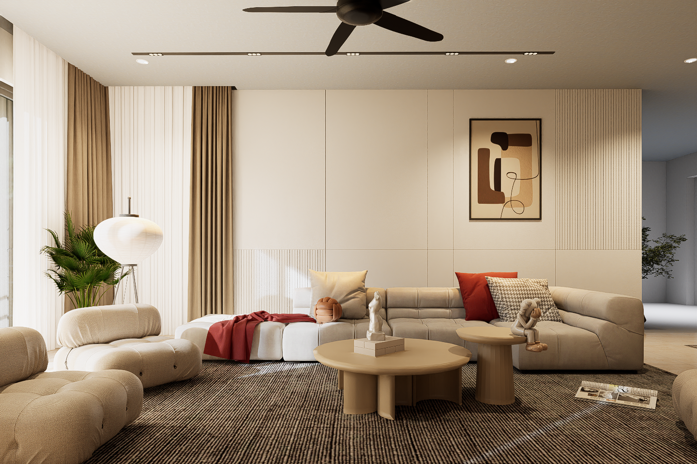
01 — RESIDENTIAL↗Spaces made for living
Spaces with
a sense of belonging.
Thoughtful interiors, shaped around the way you live, work and gather.
Residential & commercial interiors
Designed with intention in Malaysia
Designed with intention in Malaysia
R.Rooms for real life
Residential↗
Residential↗
RUANG · BY KYRAL · RUANG · BY KYRAL ·
01 / A considered approach
Good design feels like
coming home.
We believe a room should do more than look beautiful. It should feel like you: calm when you need to pause, open when you want to connect, and effortless in the everyday.
Ruang means space. We make space for the life you want to live.
Meet your design partner ↗02 / Selected spaces
Made to stay with you.
A selection of spaces, each with its own rhythm, story and point of view.
Residential Sebayu Hills · 4 views+
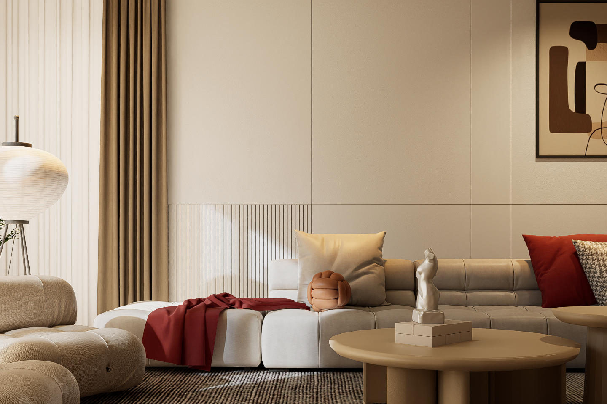
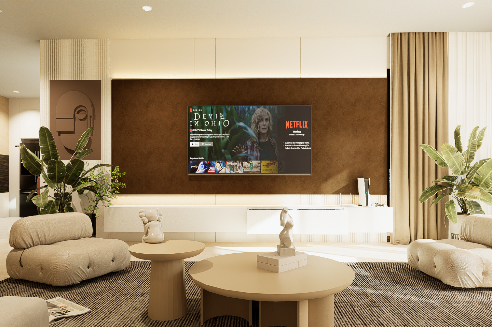
Alia, Mori Park
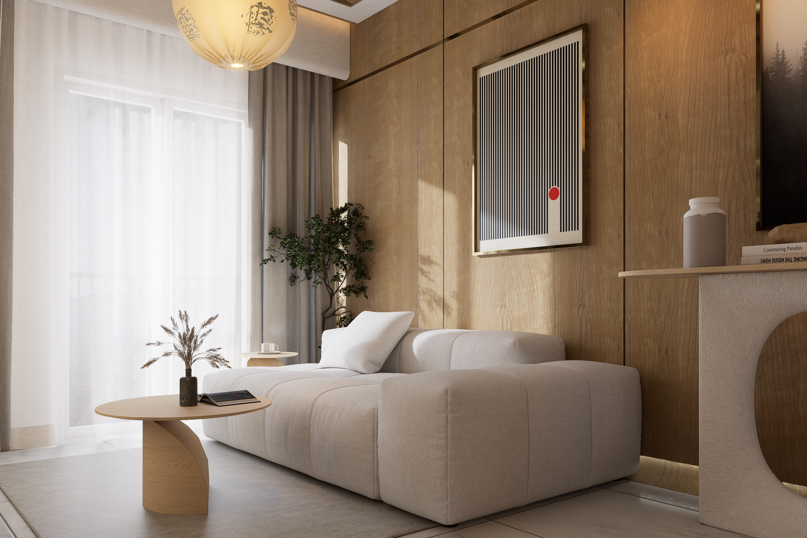
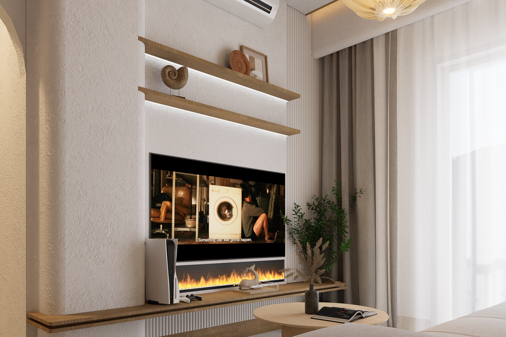
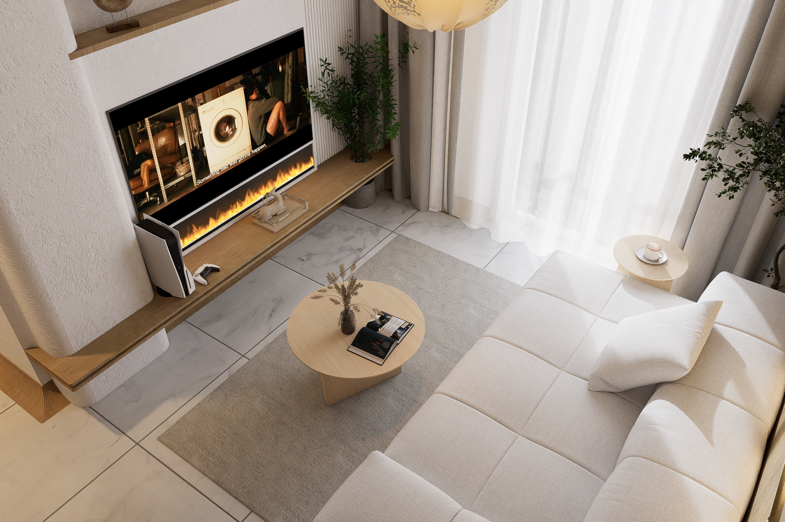
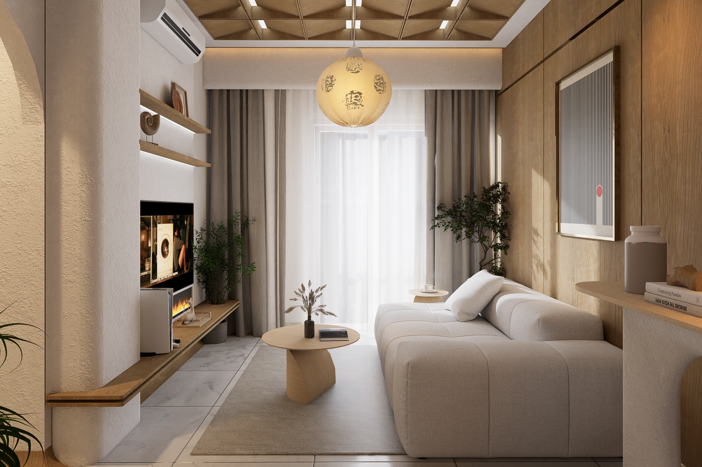
F&B Kopi Malam · 4 views+
Healing Sampai Ke Bulan.
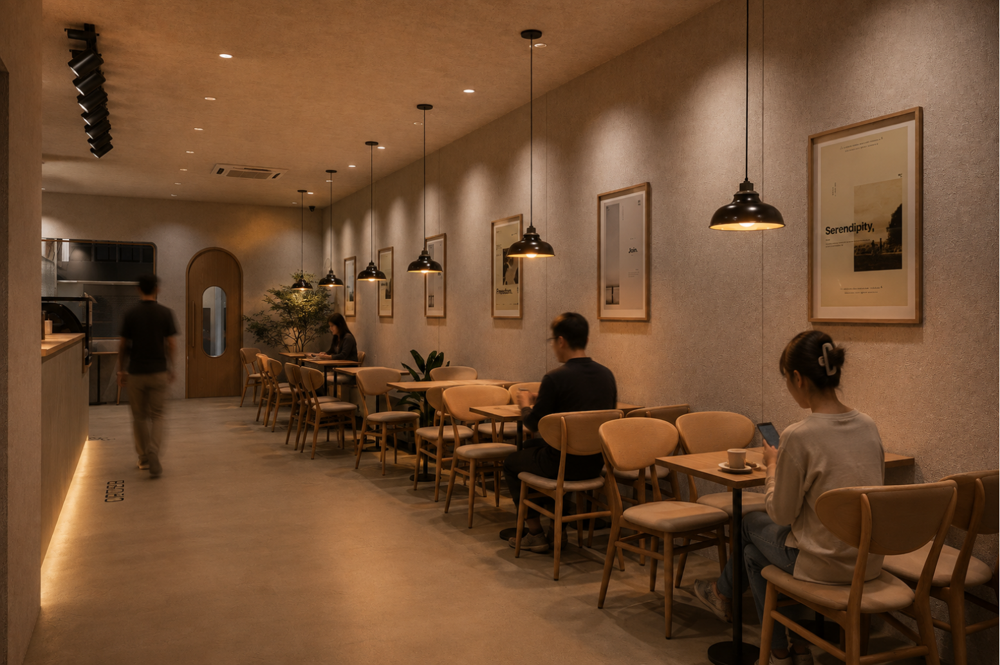
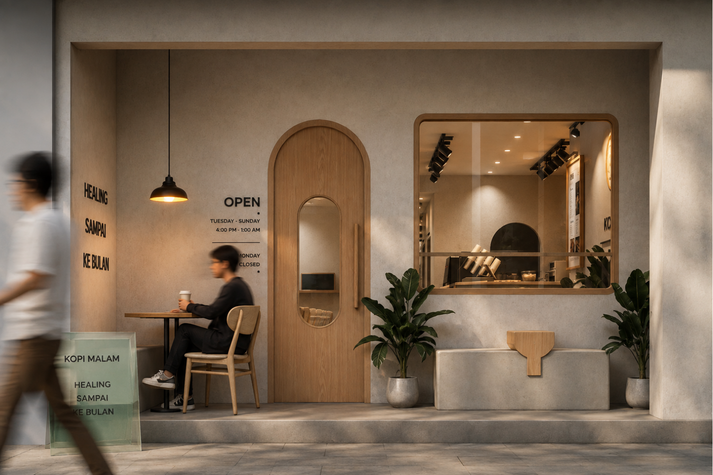
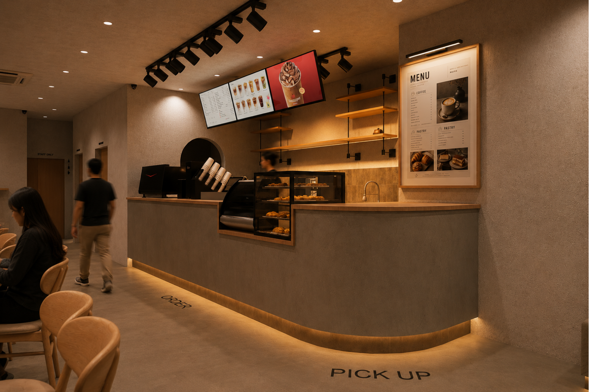
Commercial Cleanpro Laundry · 4 views+
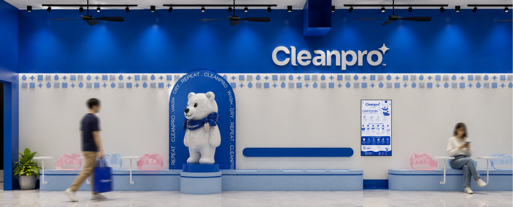
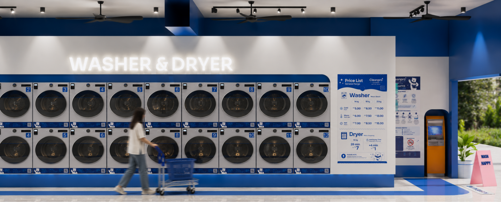
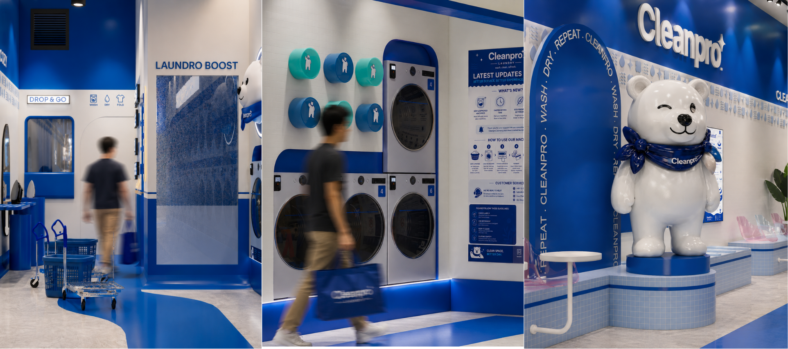
✳
“A space becomes meaningful
when it feels like yours.”
03 / What we do
From first sketch
to final feeling.
One considered process. A space that feels like it could only be yours.
Interior design
A complete vision for how your space looks, feels and flows.
↗Space planning
Layouts that bring a little more ease to the everyday.
↗Material & styling
Thoughtful finishes, lighting and details that make a room.
↗Commercial spaces
Distinctive places people enjoy returning to.
↗04 / How we work
Simple, thoughtful,
together.
Clear steps. Open conversations. Care in every decision along the way.
Listen
We learn what matters to you, how you live and what you hope the space can become.
Imagine
We translate the brief into a clear design direction, plans and material palette.
Refine
We work through the details together, balancing the beautiful with the practical.
Bring to life
We coordinate the design journey through to the finishing touches.
05 / Your next chapter
Let’s make room
for something good.
Tell us a little about your project. We’ll take it from there, together.
011 5416 3056 ↗Call or WhatsApp · Malaysia
Message us on WhatsApp ↗